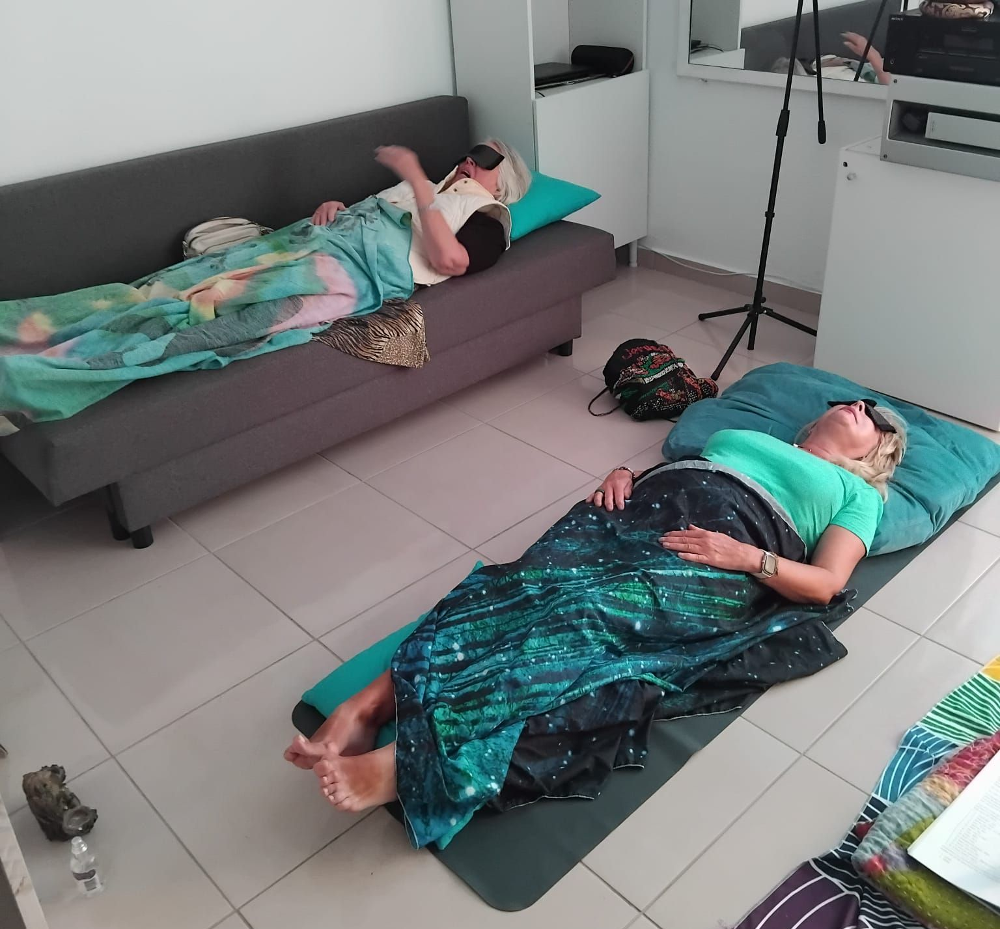
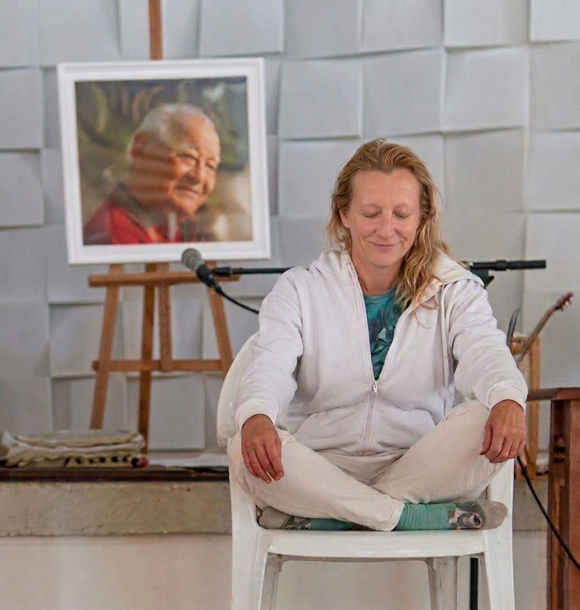

About Nina
Music Therapy & Yoga Teacher in London, Italy and Canary Islands — Certified and Qualified
Nina is a certified and accredited music therapist, sound healer; mindfulness and hatha yoga teacher and gym instructor based in London (UK). Her practice blends ancient healing traditions with modern wellness approaches, creating a unique space for personal transformation.
"Through the power of voices, mantras and sounds, we unlock the body's natural ability to heal, restore and find balance."
Every session is thoughtfully designed to nurture both body and mind, welcoming people of all ages, backgrounds and experience levels. No prior experience is needed — just an open heart.
What I Offer

Harnessing the universal language of music to promote emotional expression, reduce stress and support mental well-being through guided listening and active participation.

Using healing frequencies, singing bowls and vocal resonance to restore balance in the body's energy centres, releasing tension and promoting deep relaxation.

The most helpful and well-known form of yoga. Hatha balances physical postures (asanas) with controlled breathing (pranayama) and meditation. It is an excellent, deliberate practice for establishing body awareness, building strength and cultivating deep mental focus.
A goal-directed intervention using trained animals to enhance physical, emotional and mental health. Proven to lower blood pressure, reduce stress-inducing cortisol, and release mood-boosting endorphins and oxytocin.
A highly concentrated use of essential oils extracted from plants to enhance physical and emotional health. Widely used to manage symptoms like stress, anxiety, nausea and fatigue, promoting holistic balance and well-being.
From Our Sessions





Why Join
Each session is designed to nourish your body, calm your mind and reconnect you with your inner self. Here's what regular practice can bring into your life.
Common Questions
Sound healing uses specific frequencies, Tibetan singing bowls and vocal resonance to restore balance in the body's energy centres. It releases deep tension and promotes profound relaxation, helping with stress, anxiety and emotional well-being. Each session creates a unique sonic landscape tailored to the group's needs.
While sound healing focuses on frequencies and vibrations to rebalance the body, music therapy uses active musical engagement — singing, rhythm, guided listening and creative expression — to address emotional, cognitive and social needs. Music therapy can improve communication skills, support trauma recovery and boost mental health through the universal language of music.
No prior experience is needed at all. Nina's sessions are designed to be welcoming and accessible to everyone — all ages, backgrounds and fitness levels. Whether you've never tried yoga or sound healing before, you'll feel at ease from the very first session. Just bring an open heart.
Sessions take place in London, UK. Get in touch with Nina to arrange the perfect date, time and location for your session.
Regular practice can bring balance through fitness and physical co-ordination, increased mental health awareness, release of emotional and physical trauma, wellness through voices, mantras and sounds, and improved communication and motor skills. Many participants also report better sleep, reduced anxiety and a deeper sense of inner peace.

Get in Touch
Whether you'd like to join a session, ask a question or simply say hello — I'd love to hear from you.

🕉
Tap anywhere to return